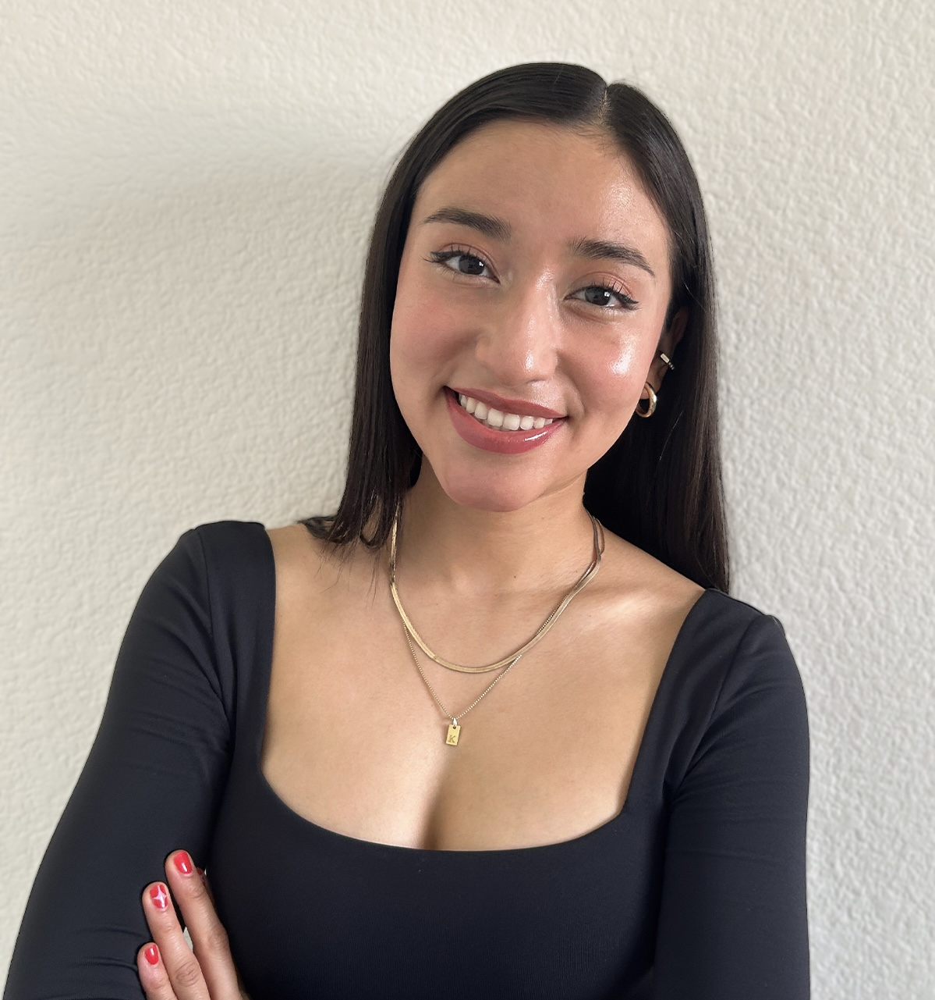

ABOUT ME
Hi! I'm Vanessa Urbieta Im a Mexican American graphic design student from UNLV
My graphic design career began at the age of 15, when I worked as an intern at my church, creating designs and graphics for their community. Long before that, I grew up surrounded by creativity, exploring different artistic outlets until I discovered design. That experience shifted my perspective, showing me that graphic design goes far beyond drawing and illustration, it lives in a professional and commercial context as well. I instantly fell in love with the field and haven’t stopped designing since. Choosing graphic design as my career felt like second nature, and every day I continue to push myself to grow, learn, and stay inspired by art in all its forms.
EDUCATION
| 2024 | Associate of Arts Collage of Southern Nevada |
| 2027 | Bachelor of Science in Graphic Design and Media |